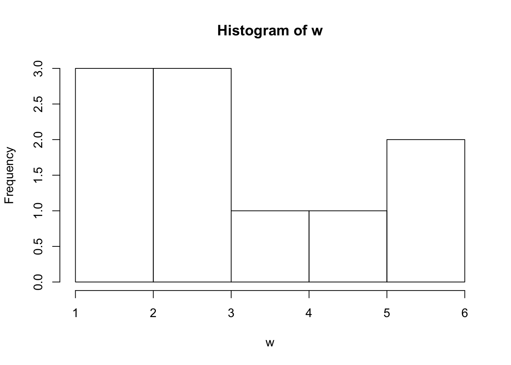

This is a page that lists functions and has a brief description of how they work.
This function shows you all the help systems for a problem
help(sum)This function is used when you are looking for the help page documentation of a certain topic in R. For example you want to understand the summing function
?sumThis function is used to see if a certain object in R is part of a class you selected. This is a logical statement.If it is in the class or if it is not in the class then True or False will be returned
A<-"H"
is(A, "character")## [1] TRUEThis function is used to create a vector of characters for a name of files or folders in a directory
A<-"hello"
dir(A)## character(0)Similar to the dir function, this function creates a vector of the names of files or folders in a directory
This function is used to create a temporary file to show that you saved your current work.
save## function (..., list = character(), file = stop("'file' must be specified"),
## ascii = FALSE, version = NULL, envir = parent.frame(), compress = isTRUE(!ascii),
## compression_level, eval.promises = TRUE, precheck = TRUE)
## {
## opts <- getOption("save.defaults")
## if (missing(compress) && !is.null(opts$compress))
## compress <- opts$compress
## if (missing(compression_level) && !is.null(opts$compression_level))
## compression_level <- opts$compression_level
## if (missing(ascii) && !is.null(opts$ascii))
## ascii <- opts$ascii
## if (missing(version))
## version <- opts$version
## if (!is.null(version) && version < 2)
## warning("Use of save versions prior to 2 is deprecated",
## domain = NA)
## names <- as.character(substitute(list(...)))[-1L]
## if (missing(list) && !length(names))
## warning("nothing specified to be save()d")
## list <- c(list, names)
## if (!is.null(version) && version == 1)
## .Internal(save(list, file, ascii, version, envir, eval.promises))
## else {
## if (precheck) {
## ok <- vapply(list, exists, NA, envir = envir)
## if (!all(ok)) {
## n <- sum(!ok)
## stop(sprintf(ngettext(n, "object %s not found",
## "objects %s not found"), paste(sQuote(list[!ok]),
## collapse = ", ")), domain = NA)
## }
## }
## if (is.character(file)) {
## if (!nzchar(file))
## stop("'file' must be non-empty string")
## if (!is.character(compress)) {
## if (!is.logical(compress))
## stop("'compress' must be logical or character")
## compress <- if (compress)
## "gzip"
## else "no compression"
## }
## con <- switch(compress, bzip2 = {
## if (!missing(compression_level)) bzfile(file,
## "wb", compression = compression_level) else bzfile(file,
## "wb")
## }, xz = {
## if (!missing(compression_level)) xzfile(file,
## "wb", compression = compression_level) else xzfile(file,
## "wb", compression = 9)
## }, gzip = {
## if (!missing(compression_level)) gzfile(file,
## "wb", compression = compression_level) else gzfile(file,
## "wb")
## }, `no compression` = file(file, "wb"), stop(gettextf("'compress = \"%s\"' is invalid",
## compress)))
## on.exit(close(con))
## }
## else if (inherits(file, "connection"))
## con <- file
## else stop("bad file argument")
## if (isOpen(con) && !ascii && summary(con)$text != "binary")
## stop("can only save to a binary connection")
## .Internal(saveToConn(list, con, ascii, version, envir,
## eval.promises))
## }
## }
## <bytecode: 0x7fca8c7b3c08>
## <environment: namespace:base>This is used to reload what you previously saved with the save func
This function loads the data sets you have
A<-c(1,2,3)
B<-c(5,6,7)
data(A,B)This function loads, attaches, and lists packages
This function transposes a data table to a data frame.
Similar to the previous function this reads table data and creates a data frame
Reads data in a vector or list
This function prints out the argument
A<-1
B<-2
print(sum(A,B))## [1] 3This concatenates outputs of objects
This prints an arguement after its converted from a data frame
This function combines arguments into a vector.
V<-c(1,2,3)
V## [1] 1 2 3This creates a vector/variable of a data range starting from and ending to
T<-(2:8)
T## [1] 2 3 4 5 6 7 8This will put numbers from a vector in what ever order you arrage them/set them up
Y<-c(2:10)
seq(Y)## [1] 1 2 3 4 5 6 7 8 9This function replicates the values you choose from a vector or a list
U<-c(2,3,4,5)
rep(U[2])## [1] 3This creates data in a frame that closely resembles matrices or lists
This constructs and checks for differnt types of lists in R
This creates a matrix from the data given
This labels a vector as a factor
This combines data rows
This combines data columns
indexing vectors x[n] nth element x[-n] all but nth element x[1:n] first n elements x[-(1:n)] elements from n+1 to the end x[c(1,4,2)] specific elements x[“name”] elements named “name” x[x>3] all elements greater than 3 x[x > 3 & x < 5] all elements between 3 and 5 x[x %in% c(“a”,“and”,“the”)] all elements in given set
x[n] list with elements n x[[n]] nt h element of the list x[[“name”]] element of the list named “name” x$name id.
x[i,j] element at row i, column j x[i,] row i x[,j] column j x[,c(1,3)] columns 1 and 3 x[“name”,] row named “name”
x[[“name”]] column named “name” x$nameid. ###Variable conversion as.data.frame(x) as.numeric(x) as.logical(x) as.character(x) ###Variable information is.na(x) is.null(x) is.data.frame(x) is.numeric(x) is.character(x) length(x) dim(x) dimnames(x) nrow(x) ncol(x) class() attributes() ###Data selection and manipulation
This finds the location of the maximun number in a vector
d<-c(2,7,10,1,3)
which.max(d)## [1] 3This finds the location of the minumum number in a vector
w<-c(2,10,11,15,1,20)
which.min(w)## [1] 5This asks which of these logical statements is true
This ordered data in a vector into ascending or descending order
This returns a vector like the vector created but its a duplicate
This builds a tables from cross classifying factors
This creates a sample of data with or without replacement ###Math 1. max()
This finds the highest number in a list
ABC<-c(1,4,17,3)
max(ABC)## [1] 17This finds the smallest number in a list
Y<-c(4,17,36,1)
min(Y)## [1] 1This diplays the lowest and highest number in a list
X<-c(3,6,9,10,13,15)
range(X)## [1] 3 15This adds all the the numbers you have selected
J<-13
K<-15
sum(J,K)## [1] 28This adds all the numbers in a list and divdes it by the total number
I<-c(1,2,3,4,5)
mean(I)## [1] 3This finds the middle most number in a list
U<-c(7,3,8,1,10,4)
median(U)## [1] 5.5This computes the variance of a number set, i.e. how much numbers vary from mean
l<-c(4,2,6,11,13)
var(l)## [1] 21.7This computes the standard deviations the numbers have from there mean
sd(l)## [1] 4.658326This calculates the covariance or correlation between two matrices
D<-c(2,5,7,9,12)
cor(l,D)## [1] 0.8879054This rounds a number up to o decimal places
T<-12.6
round(T)## [1] 13This computes the absoulte value of a numer
Q<--13
abs(Q)## [1] 13This returns the transposed of x from a matrix or data frame
This finds the diagonal of a matrix
This finds the sum of a row in a martix or data frame
This finds the sum of a column in a matrix or data frame
This finds the mean of a row in a matrix
This finds the mean of a column in a matrix
This returns a vector/list of values that have a margin of array
This splits data into subsets
This concatenates vector
This splits elements of a character vector
Vec<-"AngelinaVasquez"
strsplit(Vec,split="")## [[1]]
## [1] "A" "n" "g" "e" "l" "i" "n" "a" "V" "a" "s" "q" "u" "e" "z"This translates characters to lower case
This translates characters to upper case
This creates a histogram of given values
w<-c(2,3,5,6,6,1)
hist(w)
plot()
rnorm()
runif()
This generates random number
runif(2:17)## [1] 0.84902511 0.54697228 0.01060548 0.11506150 0.88874911 0.98545751
## [7] 0.13131646 0.57836531 0.92764182 0.26952102 0.41830999 0.47222877
## [13] 0.87068457 0.73590007 0.33056511 0.17628366show that you can define a function show that you can write a for loop show that you can write a while loop show that you can write an if else statement Explain what return() does inside a function, show you can use it Explain what break() does, show you can use it